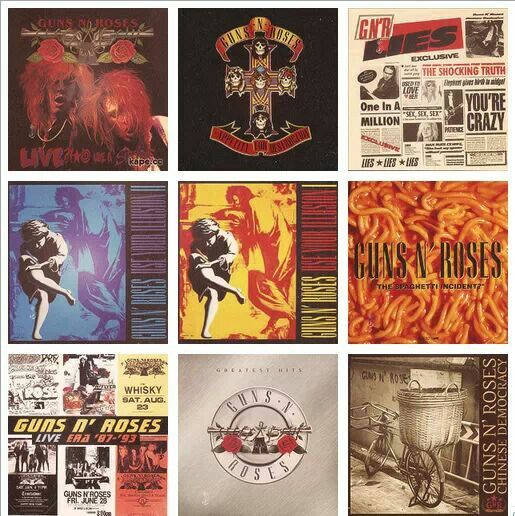

Descrição
Guns N' Roses é uma banda de hard rock formada em Los Angeles, Califórnia, em 1985. A banda já lançou seis álbuns de estúdio, três EPs e um álbum ao vivo. A banda já vendeu mais de 100 milhões de cópias em todo o mundo, sendo cerca de 43 milhões somente nos Estados Unidos. O seu álbum de estreia lançado em 1987, Appetite for Destruction, vendeu cerca de 33 milhões de cópias no mundo todo, sendo certificado 18 vezes platina pela RIAA (Associação da Indústria de Gravação da América), se tornando o álbum de estreia mais vendido da história da música. A formação atual inclui o vocalista e pianista Axl Rose, os guitarristas Slash e Richard Fortus, o baixista Duff McKagan, o baterista Frank Ferrer e os tecladistas Dizzy Reed e Melissa Reese.
História
O grupo foi formado no início de 1985 pelos membros do Hollywood Rose Axl Rose (vocais) e Izzy Stradlin (guitarra rítmica); e membros do L.A. Guns Tracii Guns (guitarra solo), Ole Beich (baixo) e Robbie Gardner (bateria). A nova banda criou o seu nome a partir da combinação de dois dos nomes dos membros do grupo. Depois de pouco tempo (várias fontes indicam que apenas dois ou três shows foram feitos com os integrantes Guns, Beich & Gardner), o baixista Ole Beich foi substituído por Duff McKagan, enquanto a falta de Tracii Guns nos ensaios levou à sua substituição por Slash. Slash tinha tocado com McKagan no Road Crew e com Stradlin durante um curto período no Hollywood Rose. A nova formação se reunira rapidamente, mas, pouco antes de embarcar em uma turnê curta de Sacramento, na Califórnia, para Seattle, em Washington, o baterista Rob Gardner saiu e foi substituído por um amigo de Slash, Steven Adler (que também era do Road Crew). A banda, que continuou a ser chamada Guns N' Roses, mesmo depois da partida de Tracii Guns, estabeleceu a sua primeira formação estável até o chamado "Hell Tour". estreia nos palcos da nova formação aconteceu em 6 de Junho de 1986, no Troubador, em Hollywood, para cerca de 150 pessoas. Após isso, a banda seguiu para Seattle, onde teve a sua turnê de estreia, conhecida por Hell Tour. No caminho entre Los Angeles e Seattle, a van onde viajavam quebrou, não restando alternativa a não ser abandonar o veículo e pedir carona. Com isso, a banda demorou mais de dois dias para chegar, atrasando seu primeiro compromisso em Seattle e causando, como consequência, o cancelamento da turnê inicial do Guns N' Roses pelos Estados Unidos, fazendo com que os membros da banda tivessem que vender parte do equipamento para voltar para casa. Em 1986, contornando as dificuldades, gravaram um EP (disco de menor duração) com quatro músicas. O nome do disco, lançado de forma independente, Era Live ?!*@ Like a Suicide, composto por quatro faixa de fitas demo da banda com o ruído do público sobreposto. Continha covers do Rose Tattoo ("Nice Boys") e do Aerosmith ("Mama Kin"), juntamente com duas composições originais: "Reckless Life" e "Move to the City", ambas coescritas pelo membro fundador do Hollywood Rose, Chris Weber.
Discografia
Ver Mais
Integrantes Atuais
Slash
Duff McKagan
Axl Rose
Richard Fortus
Frank Ferrer
Dizzy Reed
Melissa Reese
Shows
| Setembro | |
|---|---|
| Data | Local |
| 03/09 | The Gorge | 06/09 | Sun Bowl Stadium |
| 08/09 | Alamodome |
| 23/09 | Rock In Rio Festival |
| 26/09 | Allianz Parque |
| 29/09 | Estadio Monumental |
© Todos os Direitos Reservados - Desenvolvido por Matheus Rocha